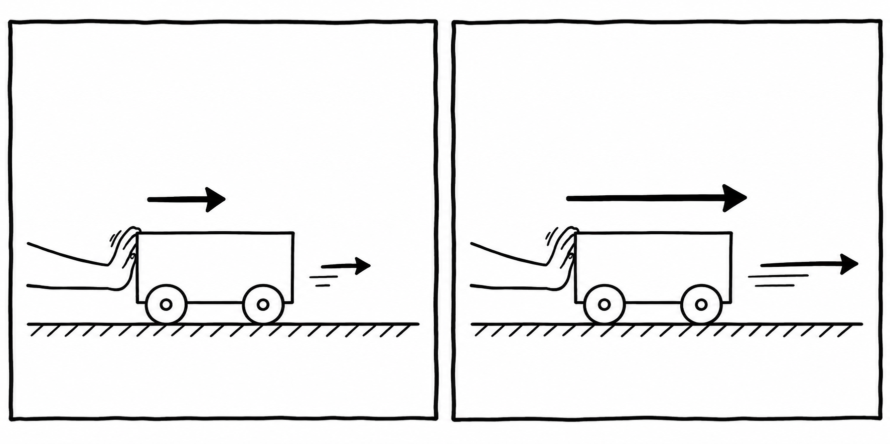

Station 3 · Newton 2
Kraft verändert Bewegung
Je größer die resultierende Kraft, desto stärker ändert sich die Geschwindigkeit.
Schiebst du denselben Wagen stärker an, beschleunigt er stärker. Ist der Wagen schwerer, brauchst du für dieselbe Beschleunigung mehr Kraft.

Die Regel
Newtons zweites Gesetz fasst den Zusammenhang so zusammen: Fres = m · a. Dabei ist Fres die Summe aller Kräfte auf den Wagen, m seine Masse und a seine Beschleunigung.
Beispiel: Wirkt auf einen Wagen mit 2 kg Masse eine resultierende Kraft von 4 N, dann ist seine Beschleunigung 2 m/s². Die Kraft kann auch die Richtung der Bewegung ändern.